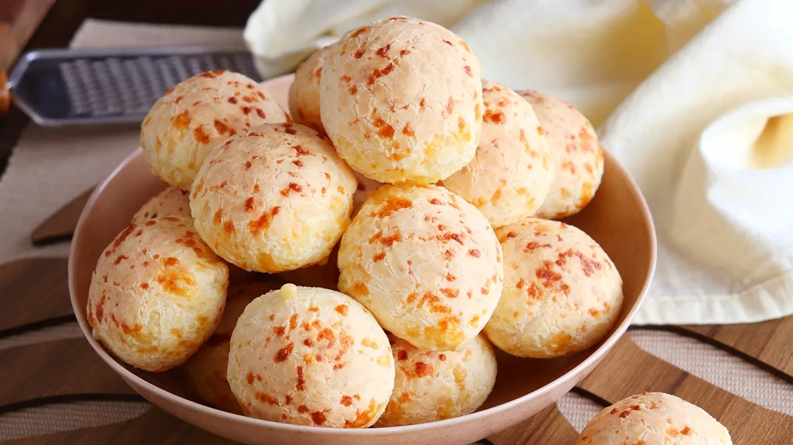

"Amô e entrega num trem só de dar água na boca"
Un sabor que abraza el verdadero pan de queso goiano
Crujiente por fuera, suave y lleno de queso por dentro. Así es el pan de queso de Goiânia: una receta casera, hecha con amor, que trae el alma del centro de Brasil a cada bocado.
Elaborado con ingredientes seleccionados y mucho cariño, nuestro pan de queso es gluten free por naturaleza (hecho con fécula de mandioca) y perfecto para compartir en cualquier momento del día: con el mate, con un café o como snack calentito que reconforta el corazón.
En Montevideo, lo hacemos como en casa: con sabor, con historia y con una entrega que se nota desde el primer mordisco.
Descubrí el placer de algo simple, delicioso y hecho con pasión goiana.
¡Amor y entrega en un solo bocado!